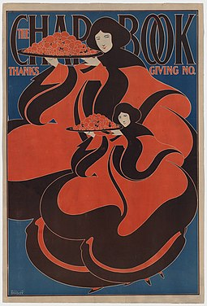
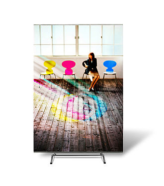
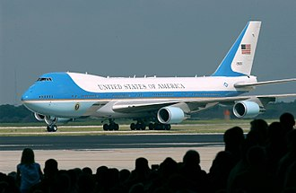

From Wikipedia, the free encyclopedia
Graphic design is a profession,[2] academic discipline[3][4][5] and applied art whose activity consists in projecting visual communications intended to transmit specific messages to social groups, with specific objectives.[6] Graphic design is an interdisciplinary branch of design[1] and of the fine arts. Its practice involves creativity, innovation and lateral thinking using manual or digital tools, where it is usual to use text and graphics to communicate visually.

The role of the graphic designer in the communication process is that of encoder or interpreter of the message. They work on the interpretation, ordering, and presentation of visual messages. Usually, graphic design uses the aesthetics of typography and the compositional arrangement of the text, ornamentation, and imagery to convey ideas, feelings, and attitudes beyond what language alone expresses. The design work can be based on a customer's demand, a demand that ends up being established linguistically, either orally or in writing, that is, that graphic design transforms a linguistic message into a graphic manifestation.[7]
William Addison Dwiggins is often credited with first using the term "graphic design" in a 1922 article,[14] although it appears in a 4 July 1908 issue (volume 9, number 27) of Organized Labor, a publication of the Labor Unions of San Francisco, in an article about technical education for printers:[15] An Enterprising Trades Union … The admittedly high standard of intelligence which prevails among printers is an assurance that with the elemental principles of design at their finger ends many of them will grow in knowledge and develop into specialists in graphic design and decorating. … A decade later, the 1917-1918 course catalog of the California School of Arts & Crafts advertised a course titled Graphic Design and Lettering, which replaced one called Advanced Design and Lettering. Both classes were taught by Frederick Meyer.[16]
Main article: History of graphic design
In both its lengthy history and in the relatively recent explosion of visual communication in the 20th and 21st centuries, the distinction between advertising, art, graphic design and fine art has disappeared. They share many elements, theories, principles, practices,languages and sometimes the same benefactor or client. In advertising, the ultimate objective is the sale of goods and services. In graphic design, "the essence is to give order to information, form to ideas, expression, and feeling to artifacts that document the human experience."[17] The definition of the graphic designer profession is relatively recent concerning its preparation, activity, and objectives. Although there is no consensus on an exact date when graphic design emerged, some date it back to the Interwar period. Others understand that it began to be identified as such by the late 19th century.[11] n 1849, Henry Cole became one of the major forces in design education in Great Britain, informing the government of the importance of design in his Journal of Design and Manufactures. He organized theGreat Exhibition as a celebration of modern industrial technology and Victorian design. From 1891 to 1896, William Morris' Kelmscott Press was a leader in graphic design associated with the Arts and Crafts movement, creating hand-made books in medieval and Renaissance era style,[22] in addition to wallpaper and textile designs. [23] Morris' work, along with the rest of the Private Press movement, directly influenced Art Nouveau. [24]
Graphic design can have many applications, from road signs to technical schematics and reference manuals. It is often used in branding products and elements of company identity such as logos, colors, packaging, labelling and text. From scientific journals to news reporting, the presentation of opinion and facts is often improved with graphics and thoughtful compositions of visual information – known as information design. With the advent of the web, information designers with experience in interactive tools are increasingly used to illustrate the background to news stories. Information design can include Data and information visualization, which involves using programs to interpret and form data into a visually compelling presentation, and can be tied in with information graphics.
A graphic design project may involve the creative presentation of existing text, ornament, and images. The "process school" is concerned with communication; it highlights the channels and media through which messages are transmitted and by which senders and receivers encode and decode these messages. The semiotic school treats a message as a construction of signs which through interaction with receivers, produces meaning; communication as an agent.